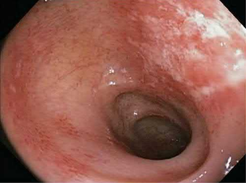
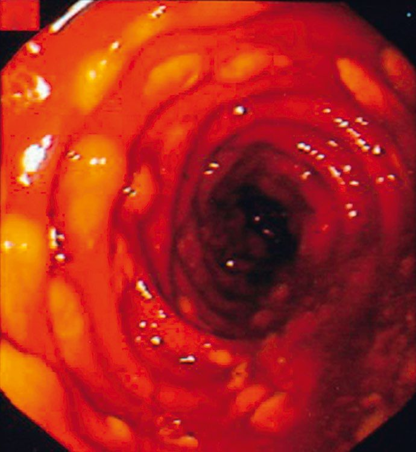

Other Forms of Colitis
Summary
- Not every inflamed colon is inflammatory bowel disease. Various insults of widely differing origin may give rise to colitis other than idiopathic inflammatory bowel disease [1], and the surgical relevance of all of them is the same: any form of colitis may progress to acute severe colitis and require emergency colectomy [1].
- This page covers acute infective colitis, Clostridium difficile and pseudomembranous colitis, neutropenic colitis, radiation colitis and ischaemic colitis.
- Ulcerative colitis and Crohn's disease have their own pages. The clinical features are broadly similar whatever the cause, which is why the diagnosis rests on the history and the stool rather than the abdomen [1].
Definition
Ischaemic colitis is colitis arising from inadequate colonic blood supply, commonest in the upper left colon where the collateral supply between the middle and inferior colic arteries is poorest, and usually precipitated by acute occlusion of part or all of the inferior mesenteric artery [1].
Pseudomembranous colitis is the form of C. difficile colitis in which exudate and slough form grey-white plaques of material on the denuded colonic surface, the pseudomembranes [1].
Radiation colitis is an acute, transient colitis caused by mucosal injury secondary to external beam radiotherapy [1].
Pathophysiology
Ischaemic colitis
- The splenic flexure is the watershed.
- The left colon and in particular the splenic flexure are usually worst affected, being the junction of the areas supplied by the superior and inferior mesenteric arteries [2].
- The same watershed is described in imaging terms: ischaemic colitis typically affects the watershed area at the junction of the SMA and IMA territories, in the region of the splenic flexure [3].
Two mechanisms produce two clinical pictures. Ischaemia of the colon typically results from thrombosis or embolism [2]. Sudden embolic events produce acutely ischaemic bowel; thrombotic occlusion usually occurs in the context of global atherosclerosis and presents far less dramatically [2].

C. difficile colitis
Toxin A produced by the organism causes acute severe inflammation in the mucosa [1]. The clinical picture is varied. C. difficile diarrhoea is foul green liquid without blood; acute C. difficile colitis is caused by progressive rapid mucosal loss with acute neutrophil infiltration and inflammation; and pseudomembranous colitis may rapidly progress to acute severe invasive colitis, especially in the immunocompromised or acutely unwell, typified by secondary infections associated with mucosal loss [1].

Neutropenic colitis
This occurs in the severely immunocompromised with neutropenia or neutrophil dysfunction, and is caused by multiple normally non-pathogenic enteric organisms colonising the colonic mucosa [1].
Clinical features
The typical features are vague abdominal pain, mild fever and diarrhoea [1]. Two qualifications sharpen this. The fever is absent in neutropenic colitis. And the diarrhoea may be bloody, especially in ischaemic, radiation, severe pseudomembranous and typhoid colitis [1].
Diarrhoea that stops without treatment is an ominous sign, not a good one: cessation of diarrhoea, except with treatment, suggests acute severe colitis is developing and should be investigated urgently [1].
Acute embolic colonic ischaemia looks like a catastrophe, presenting with severe pain out of proportion to the degree of peritonism, bloody diarrhoea, haemodynamic instability and shock [2]. Thrombotic ischaemic colitis looks like something much less alarming, presenting with abdominal pain, a raised white cell count and rectal bleeding [2]. The Oxford Handbook describes the common presentation as acute-onset bloody diarrhoea with abdominal pain, which may settle spontaneously [1].
Etiology
Acute infective colitis is typically caused by pathological variants of normal enteric organisms such as enteropathogenic Escherichia coli, and only rarely progresses to acute severe colitis [1]. Typhoid colitis, from Salmonella typhi and rare in the UK, is typified by acute bloody diarrhoea but with few if any colonic mucosal neutrophils on biopsy, because of the accompanying bone marrow suppression [1].
C. difficile colitis is associated with antibiotic use (particularly third-generation cephalosporins, even as a single dose) and with prolonged inpatient stay [1].
Bowel ischaemia is a recognised complication of aortic aneurysm repair. It is uncommon but well known after both open and endovascular repair, due to sacrifice of the inferior mesenteric artery [2].
Diagnosis
Investigation is directed by the suspected cause [1].
Stool is sent for C. difficile toxin (three samples) and for microscopy, culture and sensitivity, with cysts, parasites and ova added if atypical infective causes are possible [1].
A plain abdominal radiograph may show thickened colonic haustra [1]. In ischaemic colitis the classical plain film sign is thumb-printing, and endoscopy may show haemorrhagic oedema [2].
CT of the abdomen often shows typical mucosal thickening and may be diagnostic for pseudomembranous colitis [1]. Where ischaemia is the question, CT with intravenous contrast is the most useful test, looking for thrombus or embolus in the mesenteric vessels (though low-flow ischaemia occurs without them) with bowel wall thickening, submucosal oedema and free fluid between the mesenteric folds as the supporting findings [3].
Flexible endoscopy with biopsy, usually flexible sigmoidoscopy, completes the assessment [1].
- UK drug regimens for the infective colitides are specified by drug, dose and route.
- For acute infective colitis, antibiotics are given only if the patient is severely symptomatic [1].
- For C. difficile diarrhoea or colitis, oral vancomycin up to 200 mg daily or metronidazole 400 mg three times daily, with treatment as for pseudomembranous colitis if severe [1].
- For pseudomembranous colitis, the same oral regimens, with adjuvant systemic treatment added in severe cases, intravenous vancomycin or tigecycline [1].
For neutropenic colitis, broad-spectrum antibiotics with bone marrow support [1]. For radiation colitis, symptomatic treatment only, with antidiarrhoeals [1]. For ischaemic colitis, supportive treatment, with anticoagulation where the underlying cause is thromboembolic [1].
Surgery is rarely indicated, and the two indications are specific: failure to respond to maximal medical therapy in life-threatening colitis, which usually requires perioperative intensive care support; and complications of colitis, uncontrollable bleeding, or perforation, especially in ischaemic or neutropenic colitis [1].
Treatment and Management
Acute embolic colonic ischaemia is an operation, not a medical problem. Resuscitation and laparotomy are required, with resection of gangrenous bowel and exteriorisation of viable bowel ends [2].
Thrombotic ischaemic colitis usually settles spontaneously [2]. Treatment is supportive, with anticoagulation if the underlying cause is thromboembolic [1].
Surgery for any of these colitides is rarely indicated, but any form may progress to acute severe colitis requiring emergency colectomy [1].
Procedural interventions
Where colectomy is required and an anastomosis is being considered, the Oxford Handbook sets out the options: hand-sewn, either end-to-end or end-to-side and usually a single layer of dissolvable sutures, interrupted or continuous; stapled colonic, by linear stapler, usually side-to-side; and stapled colorectal, by endoluminal circular stapler, end-to-end [1]. A defunctioning loop ileostomy is typically used for a rectal anastomosis below the peritoneal reflection, or where comorbidities such as diabetes, age, previous radiotherapy or acute illness are present [1].
In acute embolic ischaemia the operation is resection of gangrenous bowel with exteriorisation of the viable ends rather than primary anastomosis [2].
Complications
Ischaemic ulceration at the splenic flexure may heal with stricturing and present later with large bowel obstruction [2]. The Oxford Handbook makes the same point: ischaemic colitis may progress to infarction, or occasionally form an ischaemic stricture [1].
Radiation colitis may progress from acute transient injury to chronic damage, with haemorrhagic telangiectasia and possible stricturing after months or years [1].
Pseudomembranous colitis may progress rapidly to acute severe invasive colitis, especially in the immunocompromised or acutely unwell [1].
Uncontrollable bleeding and perforation are the complications that force operation, perforation being particularly a risk in ischaemic and neutropenic colitis [1].
Outcomes
Mortality is extremely high after laparotomy for acute embolic colonic ischaemia [2]. Thrombotic ischaemic colitis, at the other end of the spectrum, usually settles spontaneously [2].
The prognostic marker worth watching on CT is air in the bowel wall tracking into the mesenteric veins and thence to the portal vein, a sign of grave significance in an adult, implying widespread and relatively longstanding bowel infarction [3].
References
- Oxford Handbook of Clinical Surgery, 5th ed., Ch. 12 Colorectal surgery
- Bailey & Love's Short Practice of Surgery, 28th ed., Ch. 77 The large intestine
- Bailey & Love's Short Practice of Surgery, 28th ed., Ch. 8 Diagnostic imaging
- Maingot's Abdominal Operations, 13th ed., Ch. 17
- Sabiston Textbook of Surgery, 22nd ed., Ch. 95 Colon and Rectum